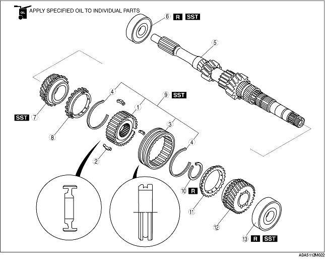
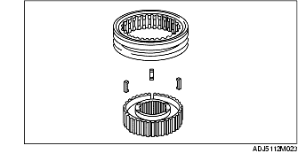
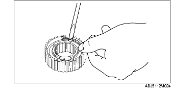
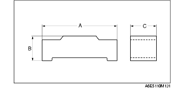
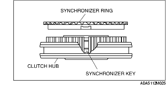
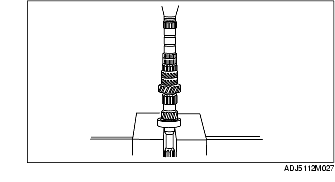
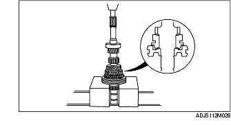
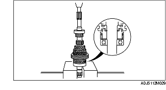
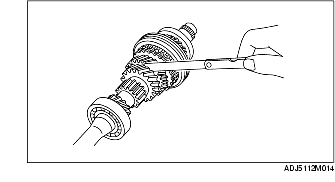

Primary shaft components assembly
1. Assemble in the order indicated in the table.

3rd/4th Clutch Hub Assembly Note
1. Install the synchronizer key springs in the clutch hub with the hooks in the grooves to hold the three synchronizer key in place.



2. Align the synchronizer ring grooves with the synchronizer key during assembly.

Bearing (Primary Shaft End) Assembly Note
1. Install the new bearing using the SST.

3rd Gear, 3rd Synchronizer Ring, and 3rd/4th Clutch Hub Component Assembly Note
1. Install the 3rd gear, 3rd synchronizer ring, and 3rd/4th clutch hub component using a press.

4th Synchronizer Ring, 4th Gear, and Bearing (4th Gear End) Assembly Note
1. Install the 4th synchronizer ring, 4th gear, and a new bearing using the SST.

2. Measure the clearance between the 3rd gear and 2nd gear.

3. Measure the clearance between the 4th gear and bearing.